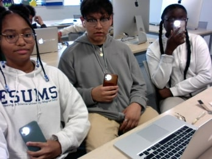

The designers behind the hit game "Centurion Arena" is KBB Gaming, which stands for the first initials of each designer. Khadija, Brian, and Breanna. They are high school freshman at ESUMS. They originally came up with this game in their technology class. Of the four gamer types, killer, explorer, achiever, and socializer, Khadija is a killer, Breanna is an achiever, and Brian is a socializer. They wanted to find a way to combine all their player types succeessfully to create a game everyone would enjoy. When asked where they got the inspiration for Centurion Arena, they said, "We wanted the players to be able to get some excercise while having fun. We hope this game can be fun for all ages, and gets your blood pumping."